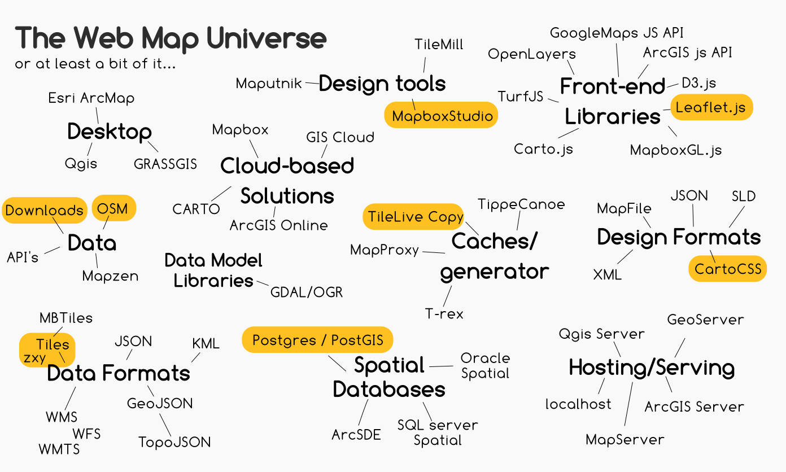
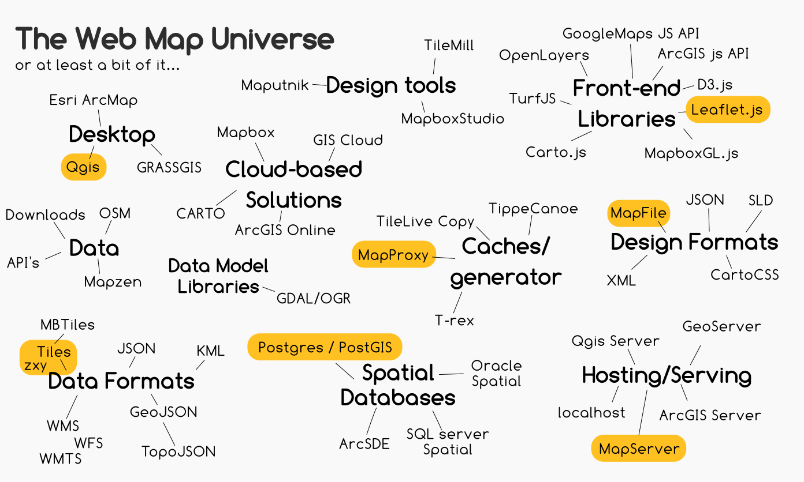
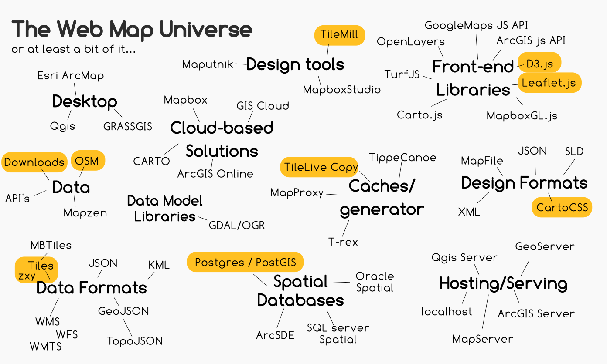
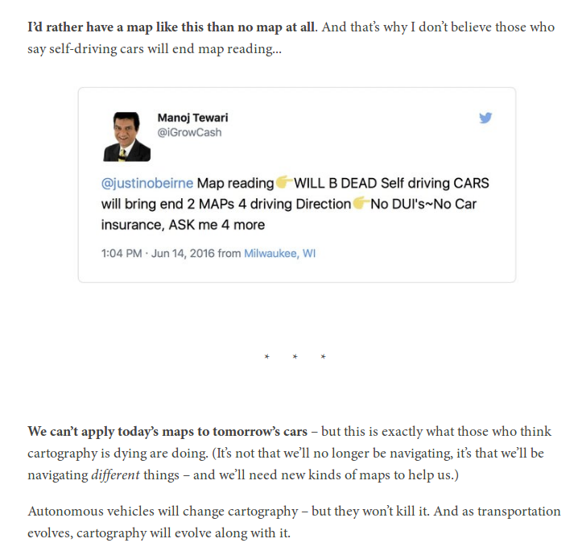

Het Web Map Universum
Poging tot..

Door: Niene Boeijen
nieneb.github.io/web_map_universe/
Niene Boeijen


P Kunst Academie
MSc Geo Informatie Wetenschappen & Remote Sensing
Stage Geo Web Visualisatie
Maptime Amsterdam & Utrecht
Web Cartograaf
Wat moet je kunnen als
[[Web]] Cartograaf
Tegenwoordig is een kaart niet meer een plat op papier maar vaak dynamisch, interactief en online!
There has never been more open data available than at this moment in time, and everyone from global NGOs to armchair hobbyists are using that data to create maps. [source]
GIS & Cartography is no longer a niche.[source]
- Big data
- Massaconsumptie
- Open source sofware/tools
- Open data, licenties
Web Mapping
- Interactie
- Experience
- Animatie
The realization of the interactive map as an experience, not just a map design.[source]
Web Mapping
- Snelheid
- Speed and scalability
- Data Driven
- User Driven
- Responsive Design


Cartography is the new code.
 [source]
[source]
Skills
You need to be able to find, manipulate, and store spatial and non-spatial data. You need to be able to design a functional and attractive cartographic representation of that data as well as the UI controls to operate it. You need to be able to implement that design through code.[source: Axis Maps]
van Cartograaf naar ..
Data analist / GIS specialist
Back-end ontwikkelaar
Front-end Web ontwikelaar
Designer
IX Interaction Designer
UX User Experience Designer
... the demand for cartographers is projected to grow nearly 30 percent by 2024.[source]
Technieken in
Het Web Map Universum!
Data Design Code
Even testen..
ik ga er van uit dat jullie bekend zijn met...
geo data
projecties
GIS software (ArcGIS , Qgis)
een beetje HTML, CSS, JS
Web maps - Leaflet - raster tegels
GeoJSON format
Vector tegels
Web Map Services (WMS / WFS)
Geo databases - Postgis
Van Data naar het Web
Doel >> Functionaliteit >> Mapping Technologie >> Design

Data Code Design
- Laad de data
- Maak dingen werkend
- Maak dingen mooi
Doel?
Héél Véél verschillende manieren om geo data / naar en over / het web te krijgen!
- Interactieve Web Map /Static web maps
- web GIS applicatie
- WMS/WFS
- Download link
- Animated, real time
- Collaborative web maps
- Online Atlasses
- Infographic, plaatje, video, gif
Bij Webmapper
Elke dag programmeren..
& Creatief bezig zijn


Bij Webmapper
Alles Open Source
Open Data
Open standaarden
Bij Webmapper
Gebruiken we de hele Web Map Universe
Afhankelijk van de vraag, doel, project
Hier Verwarmt
Vraag
Kaart met gas verbruik per buurt en buurten met warmtenetten
Update : 1x per jaar
klant:
Web ontwikkelaars, géén geo kennis!
Oplossing:
Leaflet.js met Raster tegels cache
Eind product Webmapper:
Raster tegels xyz
Consult over Leaflet.js
Aanpak Hier Verwarmt
Web map universe Hier
DataLab Amsterdam

Vraag:
Cartografisch mooie stijlen 3x voor achtergrond kaart Amsterdamse data
Wekelijkse update
Klant:
eigen Server, eigen Database, eigen frontend
Zelf beheer en update
Oplossing:
PostGIS DB + Mapserver + Mapproxy caching
Eind product Webmapper
Mapfiles
Consult Mapserver inrichting
Consult Mapproxy
Consult leaflet.js
Aanpak Datalab
Web Map Universe Datalab
EnergieLabel Atlas
Vraag:
Interactieve applicatie die data over energie labels laat zien.
Data per gemeente, huis
Zoek funtie op plaats en adres
15 minuten update!!
Klant:
Geen kennis, volledig uitbesteed
Oplossing:
D3.js + Leaflet.js Applicatie
automatische update cycles - backend
Eind product
applicatie, back-end, beheer
Aanpak EnergieLabel Atlas
Web Map universe Energielabel atlas
Verre toekomst? ..
 [source]Samenvatting
De nieuwe Cartograaf
Data Design Code
Technologieen uit het Web Map universum
Voorbeelden uit het werkveld
Kom langs!

Bedankt!
niene@webmapper.net
@NieneB